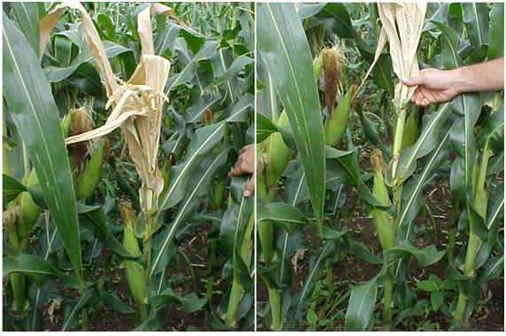
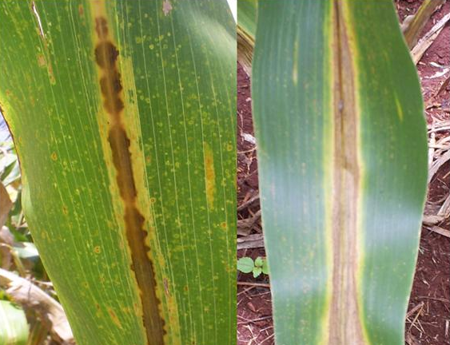
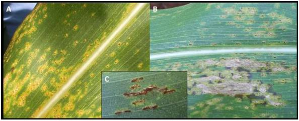
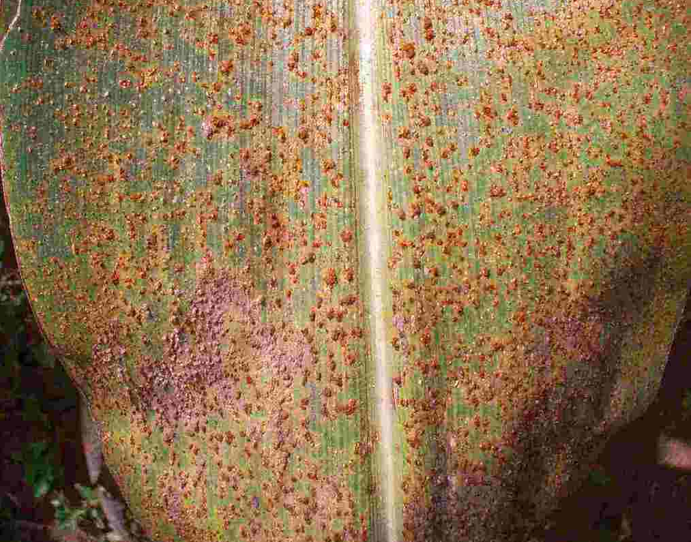
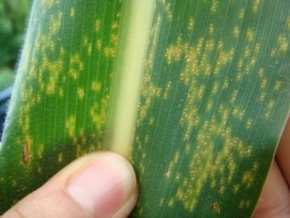
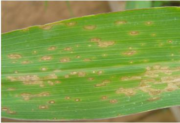
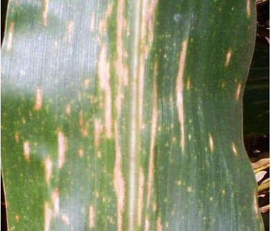
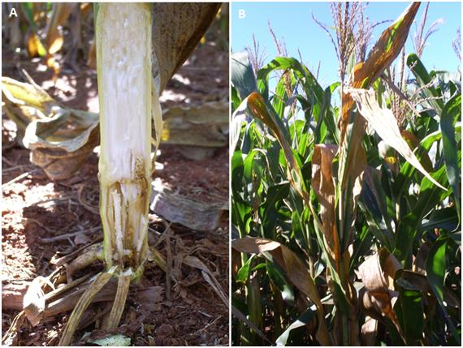
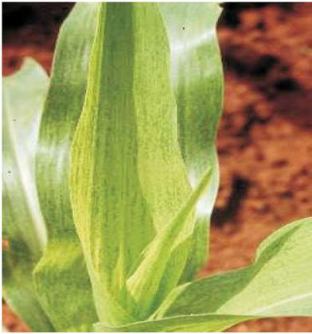
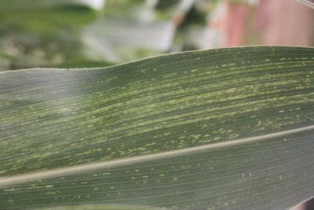

Doença: Bacillus avenae.
Nome científico: Acidovorax avenae subsp. Avenae
Tipo: Bacteriana;
Etiologia: Bactéria gram negativa, as colônias são de cor creme, com bordos lisos e o centro mais escurecido quando cultivadas em meio de nutrientes ágar.
Sintomas: Causa queima nas folhas e podridão do colmo das plantas. Nas folhas, os sintomas se iniciam por lesões anasarcadas, de cor verde-clara. Em condições favoráveis as lesões aumentam em tamanho, acompanhando o comprimento das nervuras.
Temperatura: 30-35ºC.

Doença: Podridão Bacteriana Do Colmo.
Nome científico: Erwinia chrysanthemi pv. zeae
Tipo: Bacteriana;
Sintomas: Súbito aparecimento de plantas tombadas. Seca prematura de plantas. Prodridão de colmo pode ocorrer em um ou em vários internódios acima da superfície do solo. Os sintomas nos internódios atacados são o encharcamento dos tecidos e a perda de firmeza ou rigidez dos tecidos do colmo, que provoca tombamento das plantas
Controle: Uso de cultivares resistentes. O manejo adequado da irrigação, quantidade e qualidade da água utilizada, ajuda na redução das plantas afetadas..

Antracnose Foliar
Nome científico: Glomerella graminicola
Etiologia: Elevada umidade relativa do ar e chuvas frequentes favorecem o desenvolvimento da doença.
Tipo: Fúngica
Sintomas: Lesões necróticas, pardacentas, arrendondadas ou ovaladas. Ataques intensos podem causar extensa queima foliar.
Controle: Uso de híbridos resistentes e rotação de culturas.
Temperatura: 28 a 30ºC.

Ferrugem Comum
Nome científico: Puccinia sorghi.
Etiologia: Puccinia sorghi, seus uredóporos possuem formato esférico a elipsóide. Seus uredósporos possuem formato esférico a elipsóide, de coloração canela. Os uredósporos germinam através de poros germinativos equatoriais.
Tipo: Fúngica
Sintomas: Pústulas elípticas e alongadas, em ambas faces da folha, com produção de uredósporos de coloração marrom-canela. As pústulas tornam-se mais escuras com o passar do tempon consequencia do desenvolvimento de teliósporos. Nas folhas, é comum a ocorrência das pústulas em faixas transversais
Controle: Uso de cultivares resistentes e o plantio em épocas desfavoráveis ao desenvolvimento da doença.
Temperatura: 16 a 23 C

Ferrugem Polysora
Nome científico: Puccinia polysora
Etiologia: Ocorrência de períodos prolongados de elevada umidade relativa do ar.
Tipo: Fúngica
Sintomas: As pústulas podem ocorrer na face superior do limbo e da bainha foliar, nas brácteas das espigas e, em condições de alta severidade no pendão
Controle: Uso de cultivares resistentes, escolha correta de época e local de plantio e, eventualmente, com aplicação de fungicidas. Outro método de controle é o uso de híbridos ou variedades resistentes
Temperatura: 25ºC a 35ºC

Ferrugem Tropical
Nome científico: Physopella zeae
Epidemiologia: A disseminação dos uredósporos dá-se, principalmente, pelo vento.
Tipo: Fúngica
Sintomas: Os sintomas da ferrugem tropical ocorrem em ambas as faces da folha, na forma de pústulas, de formato arredondado e recobertas pela epiderme da folha, dispostas em pequenos grupos, paralelos às nervuras.
Controle: O uso de híbridos de milho resistentes à doença é o método de controle mais eficiente e que não acarreta nenhum custo adicional ao produtor. O uso de fungicida em aplicação foliar, após o aparecimento das primeiras pústulas, pode ser uma prática eficiente em materiais de alto valor econômico ou estratégico, como em campos de produção de sementes
Temperatura: 22 a 30ºC.
Umidade relativa do ar: O desenvolvimento da doença é favorecido por ambiente úmido e quente. Alta umidade relativa e baixas altitudes

Mancha de Bipolaris Zeicola
Nome científico: Bipolaris zeicola.
Epidemiologia: A sobrevivência ocorre em restos culturais infectados e os conídios são transportados pelo vento e por respingos de chuva.
Tipo: Fúngica
Sintomas: Duas raças de B. zeícola são consideradas predominantes no Brasil, raças 1 e 3. A raça 1 desse patógeno produz lesões de coloração palha, formato de circular a oval e com formação de anéis concêntricos. A raça 3 produz lesões bem distintas daquelas produzidas pela raça 1. As lesões são estreitas e alongadas e com coloração castanho claro.
Controle: O plantio de cultivares resistentes e a rotação de culturas são as principais medidas recomendadas para o manejo dessa doença.
Umidade relativa do ar: Alta

Mancha Foliar De Bipolaris Maydis
Nome científico: Bipolaris maydis ou Nisikado Cochliobolus heterostrophus
Epidemiologia: O fungo sobrevive em restos culturais infectados e nos grãos e pode ser disperso pelo vento e respingos de chuva.
Tipo: Fúngica
Sintomas: Existem duas raças descritas para Bipolaris maydis. Na raça "O" os sintomas são lesões alongadas, delimitadas pelas nervuras com margens castanhas e tamanhos variáveis. Na raça "T" as lesões são maiores e com formato elíptico. A coloração é marrom a castanha e pode haver a formação de halo clorótico
Controle: controles de prevenção é o mais indicado, pulverização com fungicidas de contato e sistêmicos antes da semeadura, escolha correta para instalação do viveiro (livres de matéria orgânica), drenagem do solo, evitar locais úmidos e realizar controle das irrigações
Temperatura: A doença se desenvolve em temperatura ideal de 22 a 30ºC
Umidade relativa do ar: alta umidade

Podridões de raízes
Nome científico:
Etiologia: Fungos do gêneros Fusarium, Pyrenochaeta e Pythium. Mais frequentes: Pythium graminicola e Pythium debaryanum ----> Apresentam micélio fino, de coloração branca e aspecto cotonoso, onde são produzidos os esporângios, responsavel pela repdrodução assexuada do fungo
Tipo: Fúngica
Sintomas: Lesões de coloração marrom clara a marrom escura presente na raiz, que tem chance de aumentar de tamanho, podendo causar tombamento de plantas, principalmente após de vento
Controle: Uso de cultivares resistentes e o plantio em áreas bem drenadas

Mosaico Comum
Nome científico: Sugarcane mosaic virus - SCMV
Etiologia: Transmissão é realizada por afídeos, entre os quais o pulgão do milho, Rhopalosiphum maidis
Tipo: Virotica
Sintomas: Formação de manchas verde claras com áreas verde normal, parecendo um mosaico nas folhas
Controle: Uso de cultivares resistentes, eliminação de hospedeiras e plantio mais cedo

Risca do Milho
Nome científico:Maize rayado fino virus (MRFV)
Etiologia: A transmissão do vírus da risca é feita pela mesma cigarrinha que transmite os enfezamentos: Dalbulus maidis
Tipo: Virotico
Sintomas: Pequenos pontos e traços, distribuídos ao longo das nervuras secundárias e terciárias, a partir da base das folhas do cartucho
Controle: Evitar o plantio tardios, eliminar gramineas selvagens hospedeiras